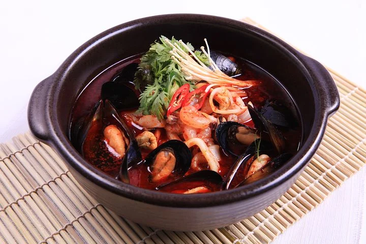
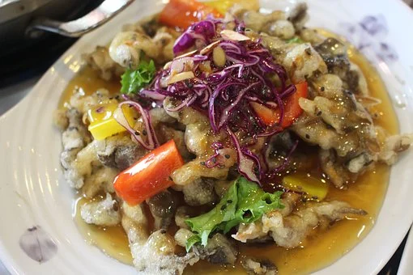
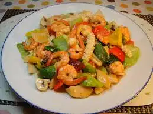
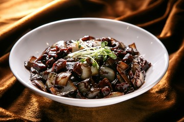
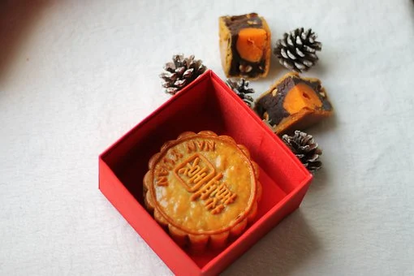
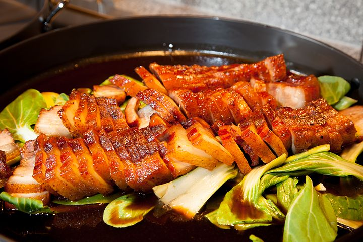

재료
돼지고기 (짜장, 카레용) 300g
청경채 2~3개
양배추 3~4잎
대파 많이
양파 1개
고춧가루 5스푼
굴 소스 4스푼
진 간장 4스푼
후추 1/4 스푼
물 1L
소금 반 스폰
식용유 4~5 스푼
1. 재료를 이쁘게 손질해 줍니다
2. 청양고추를 취향만큼 넣어줍니다
3. 식용유 4~5스푼을 두른 후 대파 기름을 내주세요
4. 남은 재료를 넣고 끓여주세요
닫기
돼지등심 400g, 감자전분, 계란, 후추, 소금, 미림, 양파, 당근
목이버섯, 간장, 식초, 설탕
1. 감자전분과 물을 섞어 반죽을 만들어준다
2. 목이버섯을 물에 넣어 불린뒤 적당한 크기로 자른다
3. 등심을 적당한 크기로 잘라 후추와 미림, 소금을 조금씩 넣고
30분정도 염지한다
4. 양파, 당근 등 채소를 잘게 썰어준다
5. 간장, 설탕, 물, 식초를 섞고 끓이고 중간에 야채와 버섯을 넣는다
6. 중간에 감자전분을 한 스푼씩 넣어준다
7. 감자전분 반죽에 계란과 식용유를 넣고 섞는다
8. 반죽에 고기를 넣고 섞어준후 예열된 팬에 기름을 넣고 튀긴다
9. 고기에 소스를 붓지말고 찍어먹는다
닫기
짜장분말 100g, 물 3분의 1컵, 양배추 150g, 양파 1개, 대파 1대
돼지고기 다짐육 100g, 후추, 물 1컵, 중화면
1. 양배추는 굵지않게 사각썰기, 양파는 양배추와 비슷한 크기로
대파는 얇게썬다
2. 짜장분말과 물 3분의 1컵을 섞는다
3. 팬에 식용유를 두르고 대파를 볶는다
4. 파기름이 나오면 고기를 넣고 볶는다 후추도 넣고 볶아준다
5. 야채를 다 넣고 같이 볶다가 익을때쯤 짜장을 부어준다
6. 중화면을 삶아서 넣고 같이 볶는다
닫기
돼지고기삼겹살 800g, 마늘 6쪽, 생강 1쪽, 통후추 10알, 정향 10알,
계피가루 1스푼 팔각 5~6개, 대파 2대, 양파 1개, 청주 2스푼, 물 반컵, 잣가루 1스푼
양념 간장 4스푼, 흑설탕 2스푼
1. 찬물에 돼지고기를 담궈 핏물을 뺀다
2. 냄비에 물을 넣고 대파, 양파, 마늘, 정향, 생강을 넣고 끓이다가 물이
끓으면 돼지고기를 넣고 삶는다
3. 파를 채 썰어 찬물에 담궈 매운맛을 뺀다
4. 물, 간장, 흑설탕, 청주, 계피가루, 팔각, 통후추를 넣고 끓인다
5. 삶은 돼지고기를 소스에 넣어 졸인다
6. 돼지고기를 얇게 썰고 파채위에 올린다
7. 조림국물을 고기 위에 올리고 잣가루를 뿌린다
닫기
두부 300g, 스팸 1개, 대파 반 대, 양파 반 개, 물 150ml
1큰술 기준
된장1, 고추장1, 고춧가루1, 진간장1, 다진마늘1, 설탕0.5, 참기름1, 통깨1
1.참기름과 통깨를 제외한 양념 재료들을 모두 섞어 양념장을 만든다
2. 두부, 양파, 스팸은 적당한 크기로 깍둑썰기를 하고, 대파는 얇게 썰어준다
3. 팬에 기름을 두르고 대파를 먼저 볶는다
4. 대파가 익을때 양파랑 햄을 순서대로 넣어준다
5. 적당히 볶아지면 물을 넣고 양념장을 넣고 된장을 따로 넣어준다
6. 넣은 재료들은 잘 섞이게 볶아주고 두부를 깨지지 않게 볶아준다
7. 참기름과 통깨를 넣고 볶아준다
닫기
새우 300g, 목살 200g, 돼지비계50g, 표고버섯 3개, 만두피
양념 : 치킨파우더 8g, 소금2g, 후추1g, 굴소스5g, 설탕6g
1. 새우를 씻어서 수분을 제거하고 다지고, 목살은 잘게 썰어 준비한다
2. 표고버섯을 끓는 물에 데치고 수분을 제거해 다진다
3. 다진 새우, 목살, 비계를 넣고 섞어준다
4. 반죽에 양념을 더해 치대주고 다진 표고와 참기를 넣고 소를 만든다
5. 준비한 만두피에 소를 넣어 만든 후 6분간 쪄준다
닫기

짬뽕
해물과 야채, 고기를 기름에 볶아서 돼지뼈나 닭으로 우리고 매콤하게 한 육수에 면을 넣어 먹는 면 종류 음식이다

탕수육
돼지고기를 썰어서 기름에 튀긴 후 특유의 달고 짠 소스에 곁들여서 먹는 튀김 요리이다

팔보채
돼지고기와 전복, 홍합 등의 해산물, 여러 채소를 양념장에 볶아서 먹는 볶음 요리이다

짜장면
밀로 만든 면에다가 중국식 된장인 춘장을 각종 양파와 고기를

월병
중국의 추석에 서로의 행운을 빌며 나눠먹는 중국 전통 과자이다

오향장육
돼지고기나 소고기의 지방이 없는 부위를 여러 향신료와 함께 긴 시간 삶은 고기 요리로 여러 채소들과 곁들여 먹는 고기 음식이다